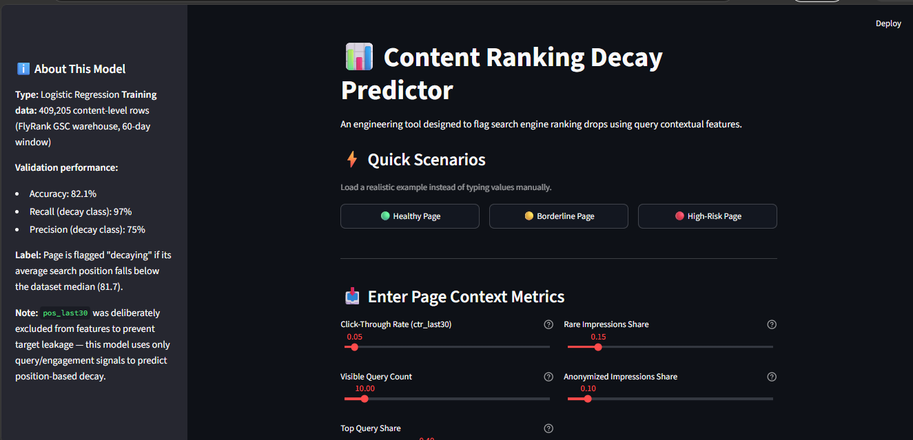

flyrank internship · lane 4
Search Ranking Decay Classifier
- data
- ~79M rows, Google Search Console (via DuckDB pipeline)
- model
- Logistic regression — 82.1% accuracy, 97% recall on decay class
- stack
- Python · DuckDB · scikit-learn · Streamlit · Plotly

Built an end-to-end pipeline to flag pages losing organic CTR and engagement, from raw GSC exports through a DuckDB-based data contract to a deployed classifier and dashboard. Documented the known limitation on Class 0 recall as part of the capstone research paper.
view on GitHub →